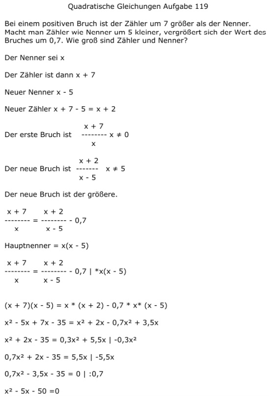

Aufgabe 119 Bei einem positiven Bruch ist der Zähler um 7 größer als der Nenner. Macht man Zähler wie Nenner um 5 kleiner, vergrößert sich der Wert des Bruches um 0,7. Wie groß sind Zähler und Nenner? Der Nenner sei x Der Zähler ist dann x + 7 Neuer Nenner x - 5 Neuer Zähler x + 7 - 5 = x + 2 x + 7 Der erste Bruch ist ------- x ≠ 0 x x + 2 Der neue Bruch ist ------- x ≠ 5 x - 5 Der neue Bruch ist der größere. x + 7 x + 2 ------- = ------- - 0,7 x x - 5 Hauptnenner = x(x - 5) x + 7 x + 2 ------- = -------- - 0,7 |*x(x - 5) x x - 5 (x + 7)(x - 5) = x * (x + 2) - 0,7 * x* (x - 5) x2 - 5x + 7x - 35 = x2 + 2x - 0,7x2 + 3,5x x2 + 2x - 35 = 0,3x2 + 5,5x | -0,3x2 0,7x2 + 2x - 35 = 5,5x | -5,5x 0,7x2 - 3,5x - 35 = 0 | :0,7 x2 - 5x - 50 =0 p, q - Formel p = -5 ; q = -50  x1,2 = 2,5 ± 7,5 x1 = 2,5 + 7,5 = 10 = Nenner x2 = 2,5 - 7,5 = -5 keine Lösung, wegen positivem Bruch Zähler = 10 + 7 = 17